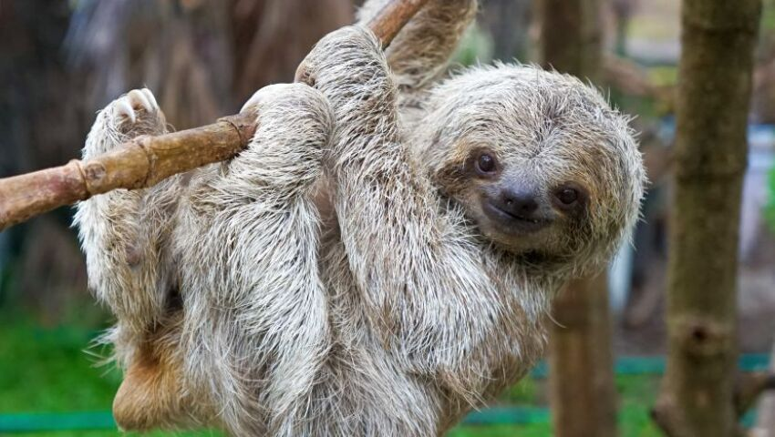

Wildlife Of North America
About
The fauna of South America consists of a huge variety of unique animals some of which evolved in relative isolation. The isolation of South America had an abrupt end some few million years ago when the Isthmus of Panama was formed allowing small scale migration of animals that would result in the Great American Interchange. South America is the continent with the largest number or recorded bird species
1.Sloths
Sloths are a group of arboreal Neotropical xenarthran mammals, constituting the suborder Folivora. Noted for their slowness of movement, they spend most of their lives hanging upside down in the trees of the tropical rainforests of South America and Central America.
2.Capybara

The capybara is a giant cavy rodent native to South America. It is the largest living rodent. Also called capivara, capiguara, chigüire, chigüiro, or fercho, carpincho and ronsoco, it is a member of the genus Hydrochoerus, of which the only other extant member is the lesser capybara.